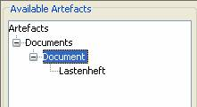
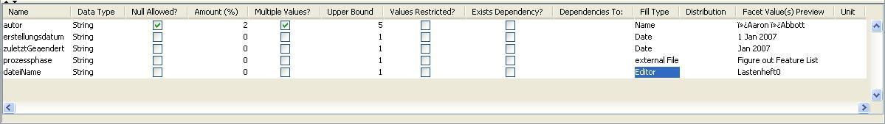

When you have added your artefact, you can see them in the “Available
Artefacts” bar on the left. Artefacts and their corresponding attributes are separated in disjunct views. More information about this approach are given in the Thesis. Click on the main artefact and set up the attributes
as shown.
The attributes will be available at the bottom of the screen. You don't have to fill
out all of them. Just use the attributes you really need.
Attention: The attributes available can vary, depending on the artefact
you selected.
The first column specifies the name of the attribute.
The next is the data type. You can change the type from the drop-down box,
but it is recommended to use the predefined data types.

Null
Allowed / Amount (%)
You should usually start checking your attribute, whether null values are allowed or
not. If so, tick the checkbox Null Allowed? for this attribute. After
you have clicked the checkbox, the Amount (%) is unlocked and can be
changed. With this option, it is possible to control the amount of
attributes with null values. Integer values from 0 through 100 are allowed. You
should immediately specify the amount (%) of data sets that will not have a
value in the data sets after unlocking the option.
Multiple Values / Upper Bound
The next step is to check, if the attribute can have more than one value.
A real world scenario for this could be multiple authors of a book.
To allow multiple values, click the Multiple Values? checkbox. If this
option is allowed, the “upper bound” value can be changed. This indicates the
maximum values allowed. Let’s say, you enabled the option multiple values
for the attribute author and you changed the upper bound to the
integer value of 3. The DataGenerator can then add up to three authors, which
means that there will be the Authors
Freeman, Frost, Mosley in our example.
Restricted Values
This option doesn't represent the current approach. At the beginning it was developed as a restricted mechanism. It should be possible that only special values are valid for some attributes. To prevent that invalid characters are being generated you can restrict the values. Right now, this is taken over by the fill behaviour ValueFiles.
Exists Dependency
In real world scenarios attributes depend somethimes on other attributes or their values. To model that, a flag for dependencies is gonna be used. This option is available to mark dependencies between attributes. Use this
function to define dependencies while enabled or disabled.
Dependencies To
If the function was unlocked by clicking the checkbox in the Exists
Dependency column and dependencies between attributes have been
identified then these can be defined using constraint-systems.
|

){kind=link}
){kind=link}